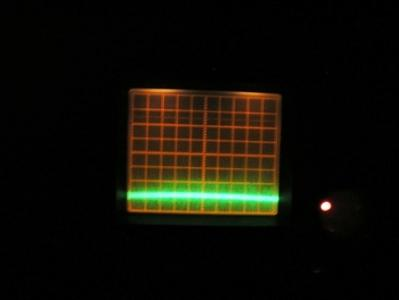
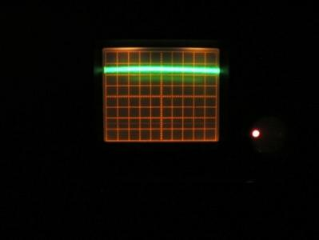

Dopo il lavoro di precisione abbastanza noioso ma indispensabile per la celletta, mi sono preso un po' più di soddisfazione con la progettazione e realizzazione del circuito.
Cercherò di essere il più comprensibile possibile sapendo che l'elettronica non è il motore trainante di questo blog, ma dopotutto questi sono appunti personali, è come un diario...
Ho imbastito un banale amplificatore in corrente continua usando solo i due amplificatori operazionali contenuti in un circuito integrato LM358; il circuito è semplice perchè deve solo amplificare le debolissime variazioni di segnale che escono dal fototransistor rivelatore della celletta.
Sottolineo che occorre amplificare non il segnale, ma le "variazioni" del segnale stesso a seconda della concentrazione, e queste variazioni possono essere debolissime, anche se il segnale in assoluto è forte.
Occorre quindi amplificare molto, e stabilizzare bene la tensione duale di alimentazione.
Con due soli operazionali ho amplificato circa 4000 volte in tensione (ciò vuol dire che pochi microvolt di variazione nella tensione del rivelatore, portano alla variazione di parecchi millivolt in uscita dall'amplificatore).
L'interno della celletta deve essere al buio perfetto perchè la sensibilità alla luce del fototransistor così amplificato è elevatissima ed una minima trafilatura di luce ambientale porta immediatamente la lettura a fondo scala.
Non si può amplificare troppo (con circuiti così semplici) altrimenti aumenta troppo il noise di fondo e la lettura diventa instabile. Ho cercato quindi un giusto compromesso.
Il segnale amplificato del photoTR è stato prima testato solo sull'oscilloscopio (assolutamente indispensabile per lavoretti come questo), successivamente ho adattato l'uscita su uno strumento analogico, prevedendo un adeguato fondo scala e gli azzeramenti indispensabili prima di ogni lettura.
E' stato previsto il controllo manuale del guadagno dell'amplificatore e della corrente di pilotaggio dei LED.

Nella foto si vede l'accrocco mentre è ancora in fase di progettazione, i componenti disassemblati belli distesi e pieni di fili come Frankestein, che dà i primi segni di vita leggendo l'assorbimento di una soluzione di sali di rame.
L'alimentatore è quello grosso da lab, e se il circuitino fa i capricci, giù uno sculacc... pardon, uno scossone!


Le prime prove all'oscilloscopio mostrano che l'apparecchio come principio funziona e sono quelle che mi danno la forza di continuare nella sperimentazione!
Una soluzione di 2 g/l di cloruro di rame (adestra) mi fa alzare la traccia di 5 cm a luce visibile rispetto all'acqua pura (a sinistra)! Vuol dire che quando saremo nell'infrarosso...
Faccio notare per chiarezza che questo "colorimetro" NON è sensibile ai "colori" come noi li vediamo, ma è sensibile all'assorbimento di certe lunghezze d'onda che attraversano una soluzione: quest'ultima potrebbe essere perfettamente incolora come l'acqua e mostrare invece un fortissimo assorbimento; viceversa, potrebbe essere colorata anche intensamente e mostrare un assorbimento irrisorio rispetto a quello che ci si aspetterebbe!
...ma di questo si parlerà la prossima volta.